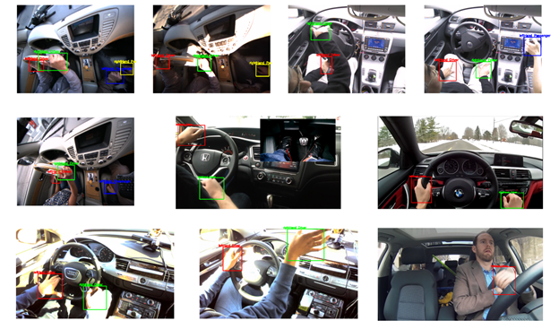
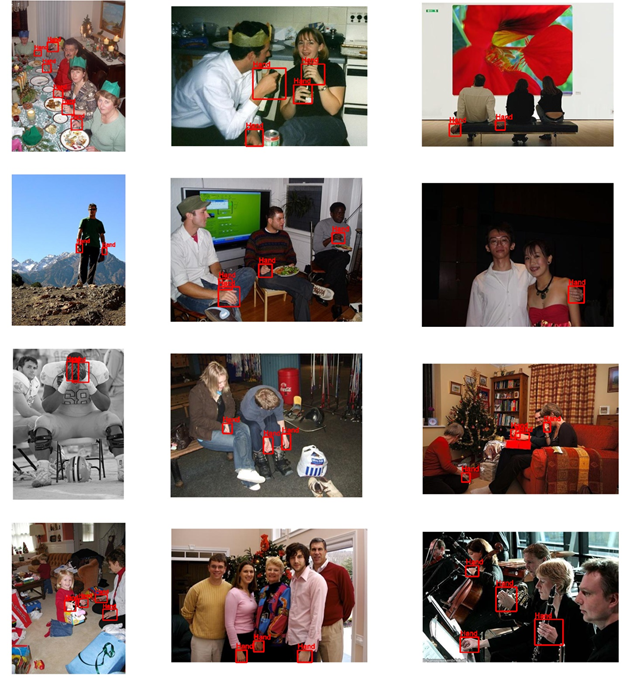

Hand detection
Lu Ding
Shanghai Jiao Tong University
Yong Wang
,
Robert Laganiere
University of Ottawa
Ottawa, ON, Canada
Overview
Our method is evaluated on challenging hand datasets, namely the Vision for Intelligent Vehicles and Applications (VIVA) Challenge and the Oxford hand dataset

